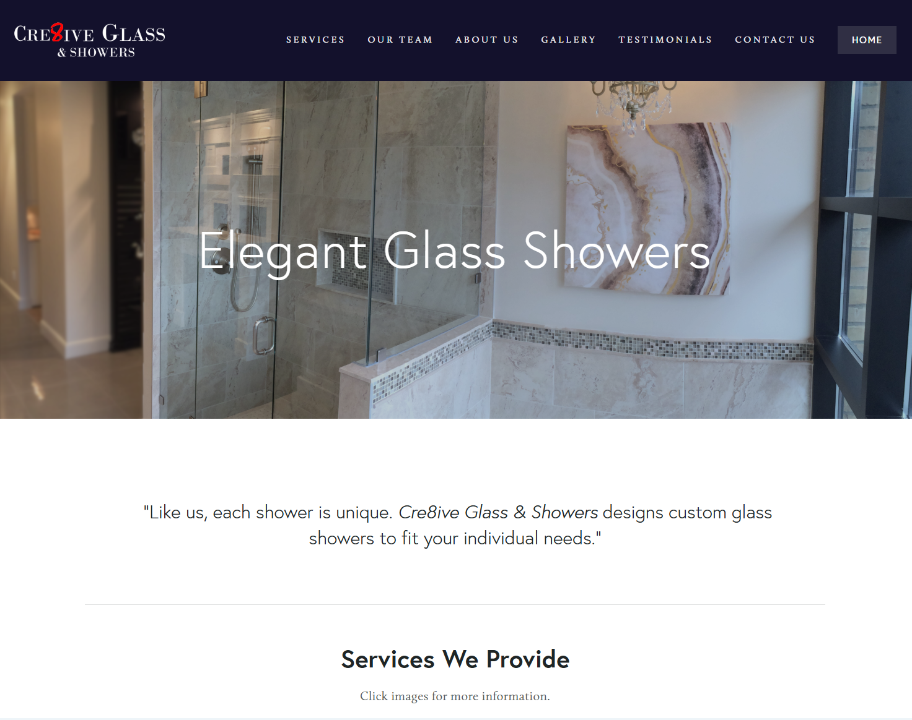

CLIENT CASE STUDY · WEBSITE DEVELOPMENT
Creative Glass and Showers
Building an affordable online presence that continued attracting visitors and creating opportunities for a local business.
Website launched: 2019
The challenge
Creative Glass and Showers approached Brockville Web Design after a disappointing experience with its previous website provider, Yellow Pages. The business was paying for website services but wasn't seeing the value or results it expected.
They wanted a more affordable and practical solution that would:
- Showcase their glass and shower services professionally.
- Give potential customers a straightforward way to request information and quotes.
- Reduce the cost and frustration of maintaining an online presence.
- Allow the owners to make basic website edits themselves when needed.
The solution
In 2019, Brockville Web Design worked with Creative Glass and Showers to build a new website using Squarespace. The platform gave the owners the ability to make straightforward content changes without needing a developer for every small update.
The focus was on the essentials: a professional place to present their services, useful information for prospective customers, and a clear way to get in touch. The project was designed to give the business a useful online asset without adding unnecessary complexity.

The results: Long-term online visibility
The analytics report shows more than 6,700 visits across its displayed reporting period. The geographical breakdown shows that most recorded visits came from Canada, with a strong concentration in Ontario, the business's primary service area.


One notable part of this project is that, after the initial 2019 build, no further development work was carried out on the website. The traffic shown in the analytics continued to accumulate without ongoing redesign or development work.
Beyond traffic: Customer inquiries
Creative Glass and Showers has reported receiving emails through the website's contact form from people asking about services and requesting quotes. The website gave prospective customers a direct way to reach the business.
A website that makes financial sense
The annual website and domain expenses have changed over time. Based on the supplied figures, the average annual expense is approximately $193.69. Creative Glass and Showers estimates an average profit of approximately $500 per installation.
One additional installation can cover more than two years of website expenses.
Illustrative comparison based on the supplied average figures. It does not establish how many installations were directly generated by the website and excludes other business costs.
For a small business, a website does not need to generate a large number of new customers to make its operating costs worthwhile. Even one additional installation could cover the average annual website expense, with any further business creating additional value.
The takeaway
Creative Glass and Showers is an example of a practical website built around the needs of a small business: a professional online presence, clear service information, a way for customers to get in touch, and a platform the owners could update themselves.
The project demonstrates why it is worth thinking beyond launch day. A website can remain a useful business asset over many years, while keeping ongoing costs relatively predictable.
A note on the business
The owners of Creative Glass and Showers are retiring at the end of 2026. As a result, their business website is scheduled to be taken offline at that time.
This case study is being preserved as a record of the website project and the online visibility it achieved during its time in operation.
READY TO GET ONLINE?
Your business deserves a website with a purpose.
Brockville Web Design helps small businesses establish a professional online presence without making the process unnecessarily complicated.